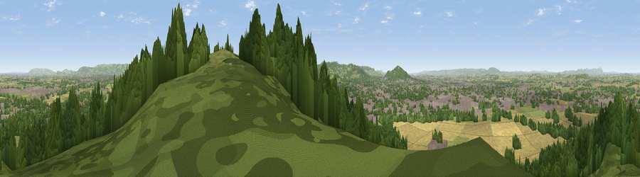

Viewpoint near Churchdown
#2778 in England · top 7% of its area beats it · near ChurchdownThe view, rendered

A 360° render of this exact spot computed from the terrain model, tree cover and land cover — summer colours, afternoon light, calibrated against photographs of famous viewpoints. Real trees, hedges and buildings will differ in detail.
The panorama
Grey silhouette: terrain skyline in each direction (720 bearings, Earth curvature and refraction included). Dashed green: skyline with trees (+15 m) and buildings (+8 m) as obstacles. Blue strip: how far the ground is visible on each bearing.
Where the view opens
Wedge length = distance to the farthest visible ground on that bearing (vegetation-aware). Rings at 10, 25 and 50 km.
What fills the view
45% woodland · 24% cropland · 19% grassland · 13% built-up
Angular shares of the visible panorama (visual magnitude), not map area. Landscape diversity 0.56 (0–1 Shannon).
Key numbers
More beautiful places nearby
The staircase of upgrades: each row has a higher view potential than everything closer. Driving times are estimates from straight-line distance, calibrated against real road routing — check an actual route before setting out.
| Place | Direction | Drive | Score |
|---|---|---|---|
| Viewpoint near Great Witcombe | SSE · 5 km | ~10 min | 80.5 |
| Nottingham Hill | NE · 14 km | ~25 min | 80.9 |
| Chase End Hill | NW · 20 km | ~34 min | 81.5 |
| Ragged Stone Hill | NW · 21 km | ~35 min | 82.5 |
| Midsummer Hill | NNW · 22 km | ~37 min | 83.0 |
| Millennium Hill | NNW · 24 km | ~39 min | 86.9 |
| Worcestershire Beacon | NNW · 28 km | ~45 min | 87.1 |
| Viewpoint near West Quantoxhead | SW · 107 km | ~132 min | 87.9 |
51.87012, -2.17660 · source: screening · position refined by local search. Computed location — check access rights before visiting.